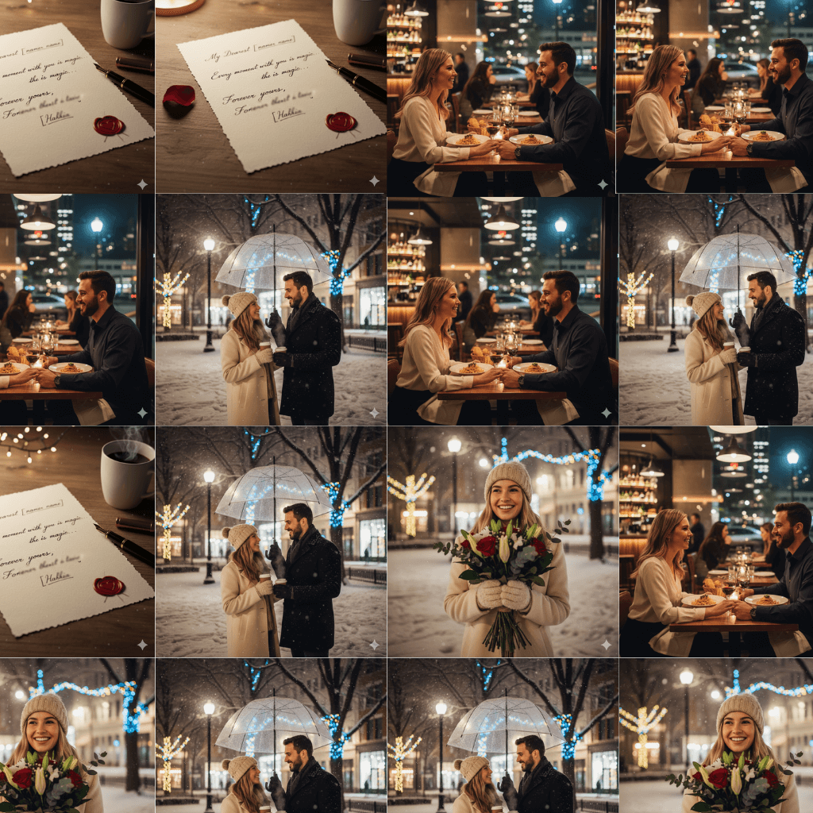

Concept
The 10th Anniversary Mosaic
Using a favorite date selfie as the target, this mosaic was built from over 500 photos from David and Anna's first decade together, beautifully recreating the original image.
View Project